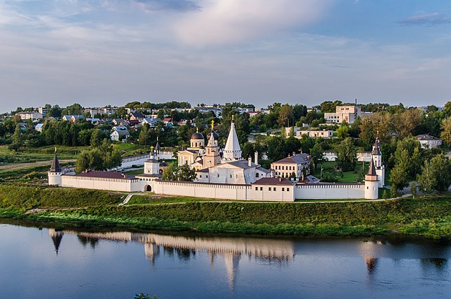

Приветствуем вас на сайте деревни Шиблино!
Добро пожаловать!
Деревня Шиблино расположена в Устиновском сельском поселении Кимрского района Тверской области на берегу живописной реки Малая Пудица.
Этот сайт на безвозмездной основе создан трудом энтузиастов и за их счёт.
Тверская область (с 1935 по 1990 год — Калининская область) — субъект Российской Федерации. Входит в состав Центрального федерального округа, является частью Центрального экономического района. Тверская область — крупнейший регион Центральной России. Расположена в пределах Восточно-Европейской равнины. Граничит с Московской, Ярославской, Вологодской, Новгородской, Смоленской и Псковской областями.  В составе Российской империи и РСФСР до 1929 года существовала Тверская губерния. 29 января 1935 года была образована Калининская область, с 1990 года область называется Тверской. Административный центр и крупнейший город — Тверь.
Тверская область расположена на западе средней части Восточно-Европейской равнины. Она протянулась на 260 км с севера на юг и на 450 км с запада на восток. Площадь региона составляет 84 201 км², что чуть больше территории Ленинградской области. Расстояние от окружной дороги Москвы до границы области — 90 км.
Поверхность в основном равнинная, на западе — Валдайская возвышенность, на востоке Молого-Шекснинская низменность, на крайнем западе — Плоскошская низина, в центре Тверская моренная гряда. Верхняя точка («Макушка Валдая») — 346,9 м — около деревни Починок Фировского района. Самая низкая точка — 61 м — берег реки Кунья в Торопецком районе на границе с Новгородской областью. Самая низкая точка — 61 м — берег реки Кунья в Торопецком районе на границе с Новгородской областью. Самая низкая точка — 61 м — берег реки Кунья в Торопецком районе на границе с Новгородской областью. Самая низкая точка — 61 м — берег реки Кунья в Торопецком районе на границе с Новгородской областью. Самая низкая точка — 61 м — берег реки Кунья в Торопецком районе на границе с Новгородской областью.
Климат всей Тверской области умеренно континентальный (по Алисову), умеренно континентальный влажный с тёплым летом, Dfb (по Кеппену), но ввиду довольно большой протяжённости области с юго-запада на северо-восток континентальность климата растёт и климат области довольно сильно варьирует. Средние температуры января меняются от −6 °C на юго-западе до −10 °C на северо-востоке, июля от +17 до +19 °C соответственно. Осадков около 650 мм в год. Самый северный город области — Весьегонск, лежащий на 58,3965° с. ш. Продолжительность дня в нём составляет от 6 часов 17 минут 22.12 до 18 часов 24 минут 22.06 (разница — 12 часов 07 минут, средняя долгота дня в году 12 часов 20 минут. Самым южным городом в области является город Белый, его широта примерно равна широте Москвы, 55,5° с. ш.
Численность населения области по данным Росстата составляет 1 230 190 чел. (2022). Плотность населения — 14,61 чел./км². Городское население — 78,01 % (2020). В состав области входит 23 города, 30 посёлков городского типа.